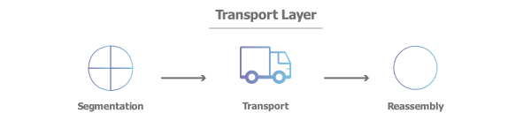

Layer 4 - Transport Layer

- Separated by UDP and TCP
- Transport control protocol
- TCP is following connection-oriented transmission
- It's slower but provides feedback (HTTP, FTP, msg, etc).
- Less data loss
- User Datagram Protocol
- UDP is following connectionless transmission
- It's faster but doesn't provide feedback and used when we don't care about the fullness of data (video games, music, movies, etc.)
- responsible for end-to-end communication between the two devices
- includes taking data from the session layer and breaking it up into chunks called segments (or datagrams in case of UDP) before sending it to layer 3
- The transport layer on the receiving device is responsible for reassembling the segments into data the session layer can consume.
- responsible for flow control and error control
- Flow control determines an optimal speed of transmission to ensure that a sender with a fast connection doesn’t overwhelm a receiver with a slow connection
- ensuring that the data received is complete , and checks checksums of data units and make use of automatic repeat request if it isn’t
- A checksum is a small-sized block of data derived from another block of digital data for the purpose of detecting errors that may have been introduced during its transmission or storage
{kind=link}